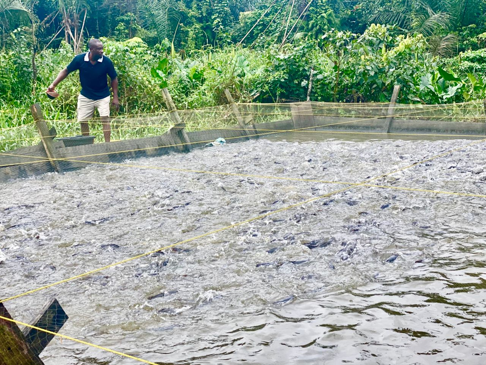

Welcome to BlueFin Capital
At BlueFin Capital, we go beyond traditional investing — we create opportunities that merge profit with purpose...
Expected Profit Calculator
Estimate your returns based on investment amount and duration.
Fish Sales
Explore our fresh harvest offers and bulk pricing for distributors and retailers.
Picture Gallery

Latest Blog Post
Discover how aquaculture is transforming food security in Africa. Read more
Why Invest With Us?
- 📈 Competitive ROI on every package
- 🔒 Escrow-backed protection for your funds
- 🌍 Impact-driven: support food security in Africa
- 📊 Transparent farm performance tracking
Get Started
Ready to grow your wealth while making a difference? Explore our farm model or invest now.